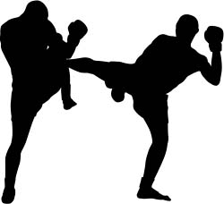

Deze pagina is voor de meer sportieve personen.
Op deze pagina vind u sportuitslagen en informatie over sportactiviteiten in Almere.
Als u op de Embleem van de organisatie klikt wordt u doorverwezen naar de site.
| Datum | Speeldag | Thuis | Stand | Uit |
| 07/08/2015 | Speeldag 1 | Almere City FC | 3 - 3 | VVV Venlo |
| 21/08/2015 | Speeldag 3 | Telstar | 2 - 2 | Almere City FC |
| 24/08/2015 | Speeldag 4 | RKC Waalwijk | 3 - 1 | Almere City FC |
| 28/08/2015 | Speeldag 5 | Almere City FC | 0 - 3 | Fortuna Sittard |
| 11/09/2015 | Speeldag 6 | FC Eindhoven | 3 - 2 | Almere City FC |
| 18/09/2015 | Speeldag 7 | Almere City FC | 0 - 3 | MVV Maastricht |
| 25/09/2015 | Speeldag 8 | FC Volendam | 3 - 1 | Almere City FC |
| 02/10/2015 | Speeldag 9 | Almere City FC | 4 - 0 | FC Emmen |
Als je geïnteresseerd bent in voetbal
dan ben je hier op de juiste plek.
Voetbalvereniging FC Almere City heeft alles te bieden
Wat je nodig hebt.
Als je geïnteresseerd bent in kickboks of in boksen dan kunt u kijken
of deze boxing gym iets voor u is.
Boksschool Seconds Out Almere heeft zich gespecialiseerd
in boksen, kickboksen en Cross Trainingen.
De bokstrainers zijn CIOS- of ALO gediplomeerd en hebben in het verleden
ook de nodige (kick)bokswedstrijd ervaring opgedaan op het hoogste niveau.
Verder is Eric Warmerdam, eigenaar van Seconds Out Gym,
een bekende trainer in boks- en kickbokswereld.
